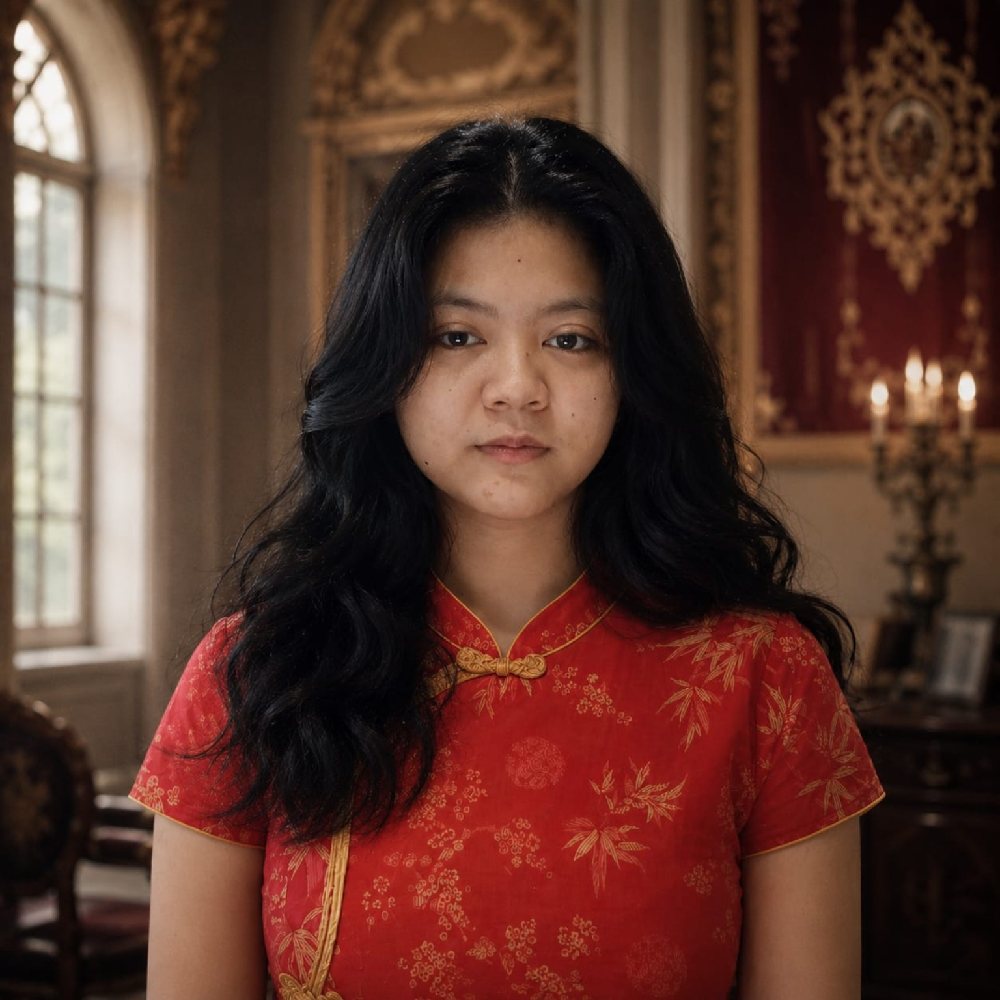

Programming
HTML, CSS, JavaScript, Python, PHP, C#, SQL
HELLO, I'M VANESSA
Mahasiswa Sistem Informasi yang mengeksplorasi Web Development, AI, Cybersecurity, dan DeepTech. Saya suka belajar dari nol, membuat sesuatu, menguji ide, lalu mengubahnya menjadi karya nyata.

01 — ABOUT
Saya Vanessa Ketzia Yosinda, mahasiswa Sistem Informasi dengan ketertarikan besar pada teknologi dan riset. Saya memiliki pengalaman belajar dan praktik di web development, multimedia, AI, cybersecurity, serta teknologi semikonduktor.
Saya terbiasa belajar mandiri melalui proyek, pelatihan, seminar, dan eksperimen. Target saya bukan hanya memahami teori, tetapi membangun solusi yang bisa digunakan dan terus dikembangkan.
02 — SKILLS
HTML, CSS, JavaScript, Python, PHP, C#, SQL
Laravel, React, Inertia, Vite, Tailwind CSS, REST API
AI tools, data concepts, serta eksplorasi AI voice & face
Cybersecurity fundamentals & critical infrastructure protection
Figma, UI/UX, Canva, Blender, video & multimedia production
Git/GitHub, MySQL, VS Code, Godot, EasyWorship
03 — PROJECTS
AI / WEB PLATFORM
Konsep platform AI/tools hub dengan dashboard, project workspace, marketplace/job board, dan integrasi web.
WEB / API
Pengembangan web/admin system dengan integrasi API untuk produk, order, invoice, QR, dan backend.
DEEPTECH / IOT
Konsep dashboard monitoring suhu, kelembapan, dan kualitas udara untuk eksplorasi IoT dan DeepTech.
FUTURE PROJECT
Eksplorasi ide robotika untuk kebutuhan masyarakat, termasuk robot pembersih dan solusi berbasis AI.
04 — CERTIFICATES
05 — DIRECTION
Saya ingin terus berkembang di bidang AI, cybersecurity, robotics, dan teknologi semikonduktor, sambil membangun produk dan melakukan riset yang punya dampak nyata.
06 — CONTACT